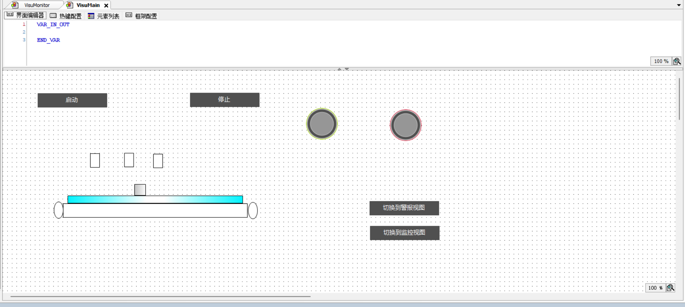
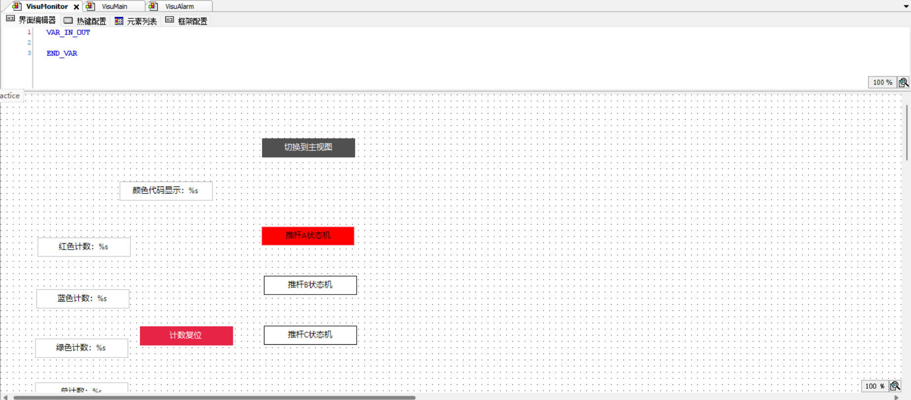
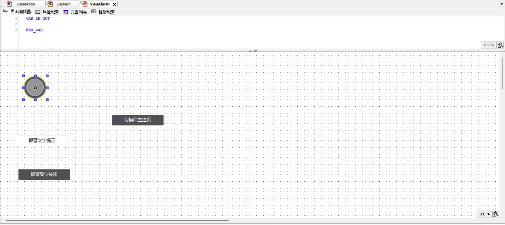

基于 CODESYS V3.5 + CODESYS Control Win V3 x64 仿真器，WebVisu 浏览器可视化。

启动 / 停止按钮、运行灯、报警灯、传送带动画、页面跳转。

红 / 蓝 / 绿计数、总计数、当前颜色代码、推杆状态灯、计数复位。

报警指示灯、报警文字提示、报警复位。
完整操作流程：启动 → 皮带运行 → 设颜色 → 触发到位 → 推杆分拣 → 计数 +1 → 报警复位。